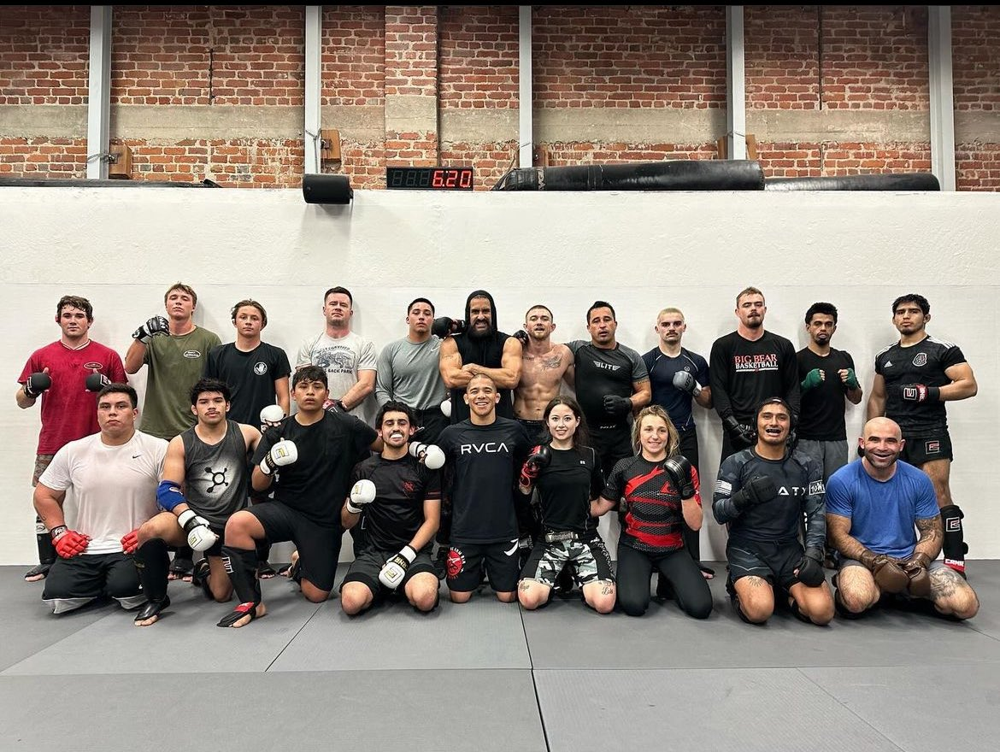

Qui suis-je ?
Je suis Normane Hammadi, électromécanicien basé en Belgique. Curieux de nature, j'aime comprendre le fonctionnement des choses et trouver des solutions concrètes. Je suis quelqu'un de rigoureux, fiable et toujours prêt à apprendre.
Ma vision du métier
Pour moi, l'électromécanique c'est bien plus que réparer des machines. C'est comprendre un système dans sa globalité, anticiper les problèmes avant qu'ils surviennent, et garantir la continuité de la production. C'est ce défi quotidien qui me passionne.
Mes centres d'intérêt
Sport
Passionné de sport en général, le MMA et le basket sont les deux sports auxquels j'ai consacré le plus d'heures. Esprit d'équipe, résilience et détermination — le sport m'a inculqué des valeurs qui me suivent au quotidien.

Musique
Ayant grandi avec des parents passionnés de musique, il est normal que je le sois devenu aussi. Un bon travail est toujours accompagné par de la bonne musique.